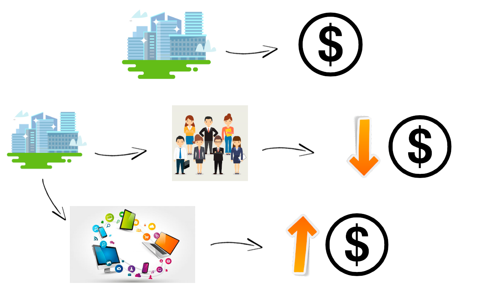
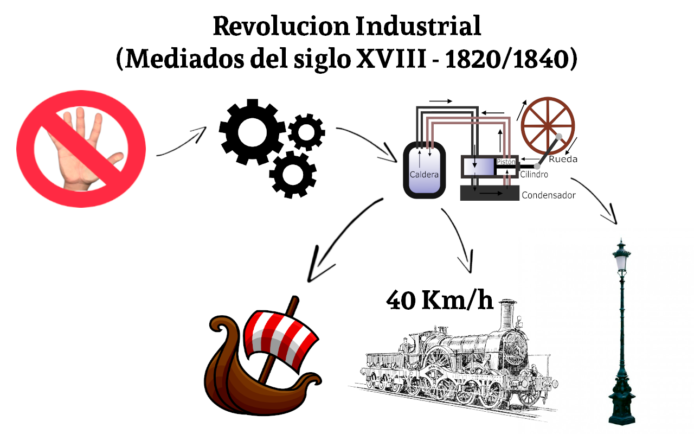
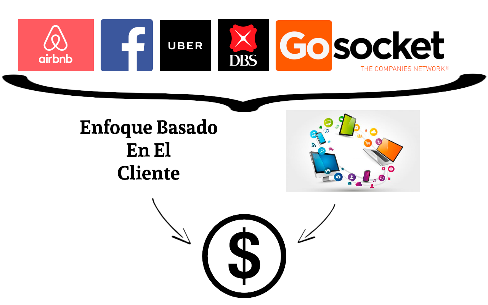

La Importancia de la tecnología en la Empresa

¿Qué implementar?
Esto depende cada uno y que quiera conseguir:
- Intranet para una mayor interacción con sus empleados
- Una tienda virtual para darme a conocer y hacer ventas online
Es importante conocer los errores mas comunes al momento de implementar la tecnología para lograr evitarlos:
- Creer que es la solución a sus problemas (y solo es un paso en la dirección correcta)
- No diseñar una estrategia clara
- Buscar soluciones por costo y no por lo que se necesita
- Montarse sobre soluciones temporales
- Intentar hacer todo in-house
- Falta de compromiso
- Falta de ambición
Beneficios:
- Incremento de la productividad
- Potencia la innovación
- Reducción de costes
- Gestión de la información
- Incrementa la seguridad
- Favorece la movilidad de empresas
- Mejora la marca
- Reclutamiento online
- Reducción de riesgos
- Reducción del valor agregado
¿Como Afectaría esto al trabajo?
Gustavo Guaragna, CEO de Snoop Consulting aclara que los empleos no van a desaparecer, sino que el trabajo cambiará.
5 Años --> Pierden 7.1M de trabajos --> Crean 2M
65% de los niños que hoy empiezan la primaria, trabajaran en empleos que no existen en la actualidad.

Industrias que cambiaron completamente con la tecnología

Lujo o Necesidad?